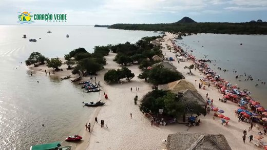

00:00:03.504
Vista aérea da Ilha do Amor com barracas, árvores, guarda-sóis e visitantes na faixa de areia.
Ilha do Amor, Alter do Chão, Santarém (PA) · confirmado
A sequência de abertura mostra a praia ao som de música. A apresentação logo em seguida situa a pousada em Alter do Chão.
Transcrição · 00:00:01 | 00:00:18 | 00:00:24
Turismo Aqui — quadro de vídeo publicado no YouTube